Linkedin Follow at least needed to be able to spot the companies with the need of devops staff
too much hassle to open all
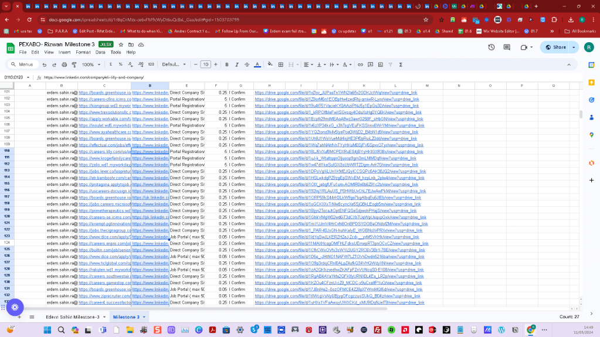
https://docs.google.com/spreadsheets/d/1r8qCnMzx-ce6vFM9cWyDt6uQcBxL_Gaa/edit#gid=1503703799
Goal set follow
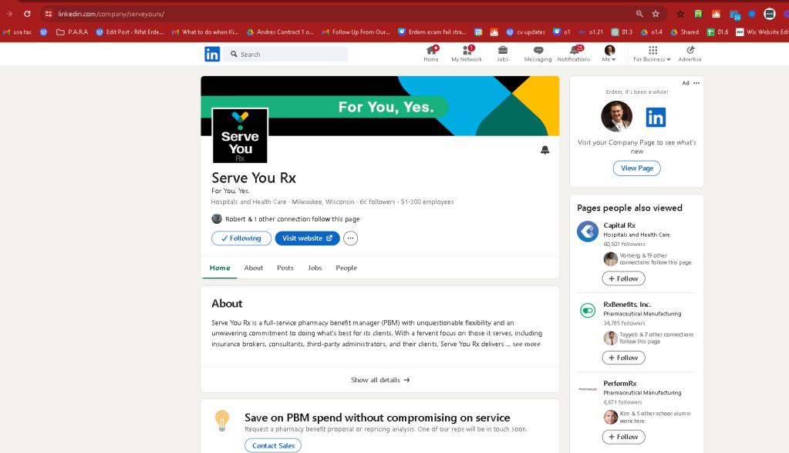
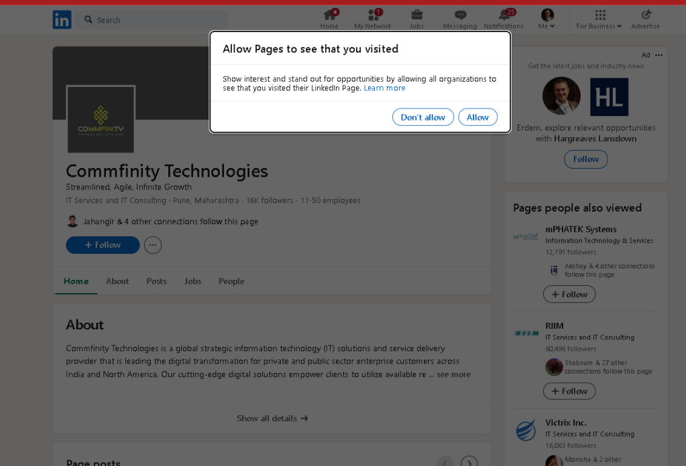
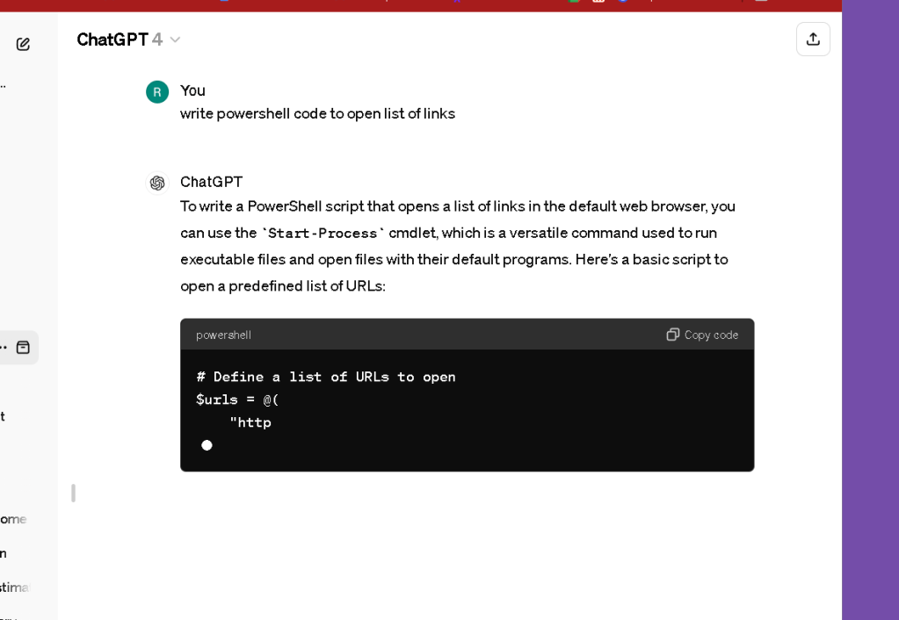
add use this is list
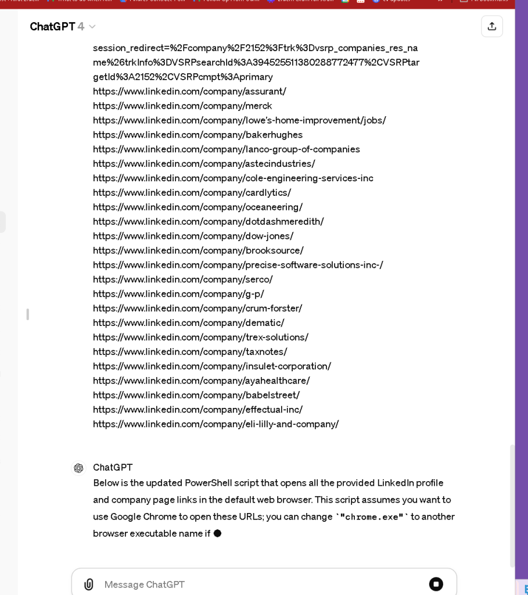
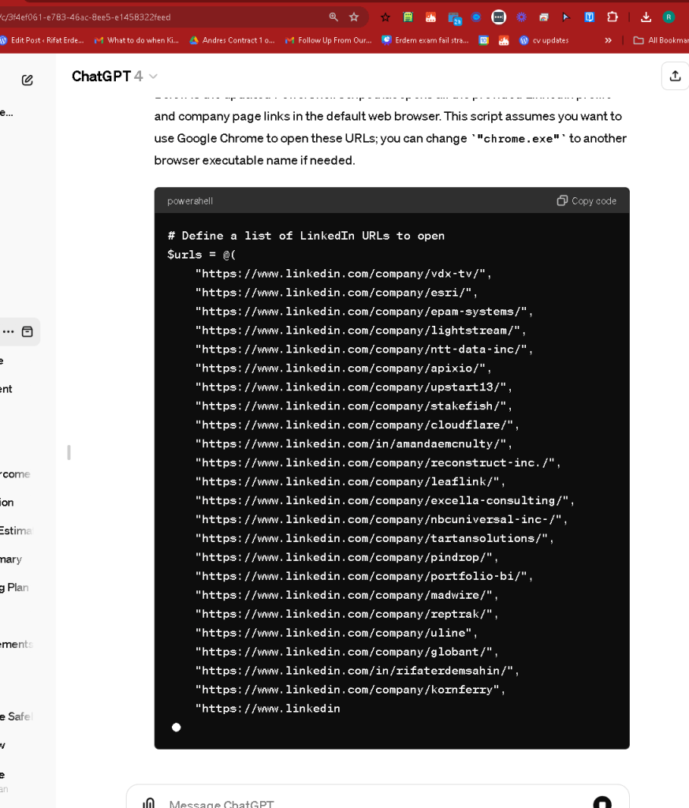
To write a PowerShell script that opens a list of links in the default web browser, you can use the Start-Process cmdlet, which is a versatile command used to run executable files and open files with their default programs. Here's a basic script to open a predefined list of URLs:
Define a list of URLs to open
$urls = @(
"http://www.example.com",
"http://www.google.com",
"http://www.yahoo.com"
)
Loop through each URL and open it in the default browser
foreach ($url in $urls) {
Start-Process "chrome.exe" $url # For Google Chrome, or use "iexplore.exe" for Internet Explorer, "firefox.exe" for Mozilla Firefox, etc.
}
Explanation:
-
List of URLs: The URLs you want to open are stored in an array
$urls. -
Loop: The
foreachloop iterates through each URL in the array. -
Start-Process: This cmdlet is used to start a process, which in this case is the web browser. You can specify the executable of the browser you want to use. The default web browser can be invoked by just passing the URL to
Start-Process, but specifying the browser gives you more control over which browser to use if multiple are installed.
Note:
-
Replace
"chrome.exe","iexplore.exe", or"firefox.exe"with the actual path of the browser executable if it's not in the system path, or if you want to ensure a specific browser is used. -
This script assumes you have permissions to execute these commands and that the browser executables are correctly installed and referenced.
memory handy
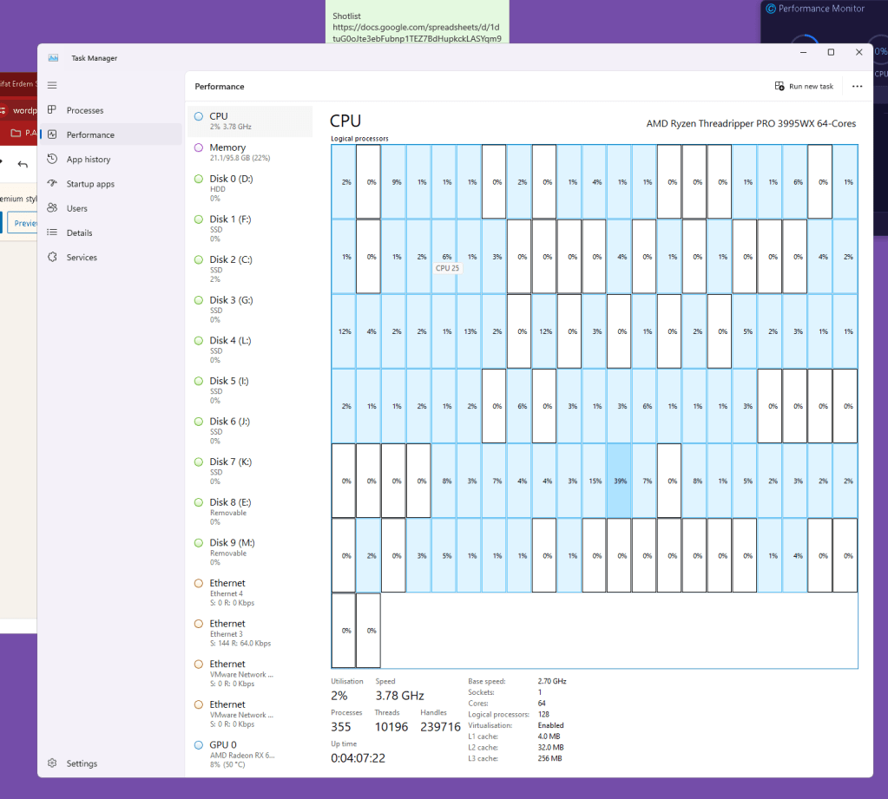
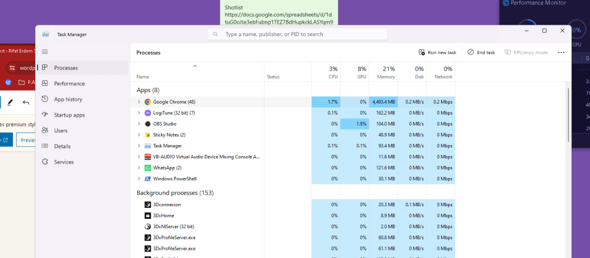
follow and close with ctrl W
429 error > need to add a second before open ups
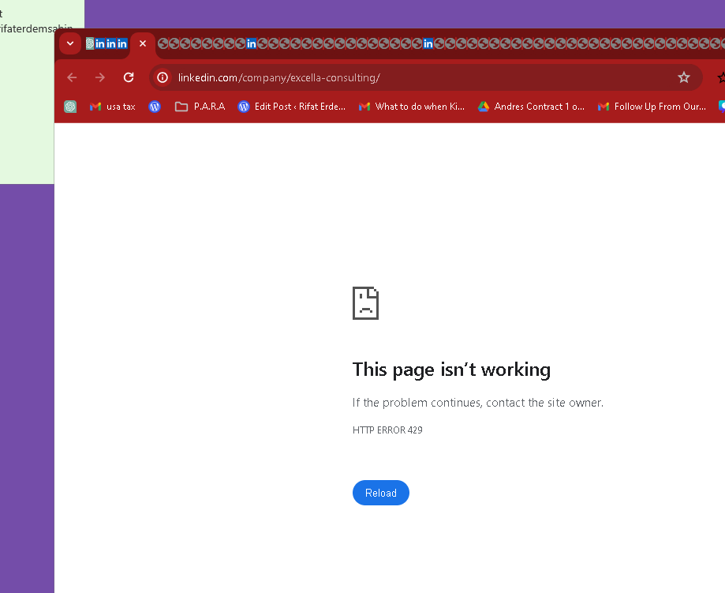
To introduce a delay of one second between opening each URL in different tabs, you can use the Start-Sleep cmdlet in PowerShell. This cmdlet pauses the script for the specified duration (in seconds). Here's how you can modify your script to add a one-second delay between opening each URL:
# Define a list of URLs to open
$urls = @(
"http://www.example.com",
"http://www.google.com",
"http://www.yahoo.com"
)
# Loop through each URL and open it in the default browser
foreach ($url in $urls) {
Start-Process "chrome.exe" $url # For Google Chrome, or use "iexplore.exe" for Internet Explorer, "firefox.exe" for Mozilla Firefox, etc.
Start-Sleep -Seconds 1 # Pause for 1 second before opening the next URL
}
Explanation:
- Start-Process: Opens each URL in the default browser. You can specify a different browser by changing
"chrome.exe"to the executable of another browser like Firefox or Internet Explorer. - Start-Sleep: This cmdlet is used immediately after opening a URL. It pauses the script execution for one second (
-Seconds 1), providing a brief interval before the script continues to the next URL in the loop.
This modification will ensure that each browser tab opens one second apart, which can help manage the load on your system and make the sequence of opening tabs more controlled and organized.
right click reload is better
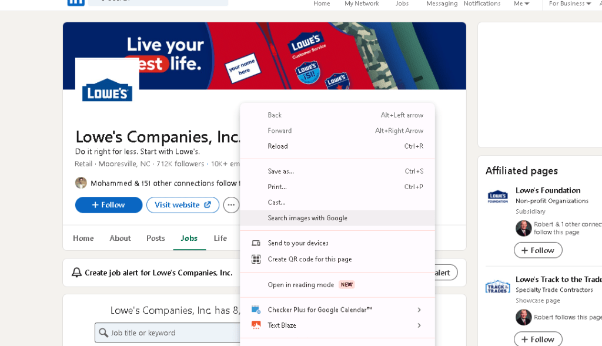
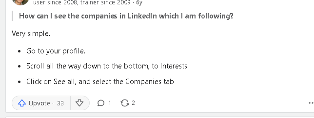
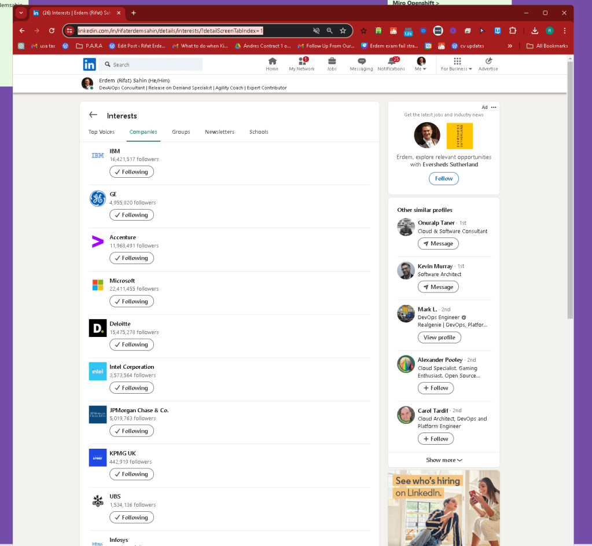
https://www.linkedin.com/in/rifaterdemsahin/details/interests/?detailScreenTabIndex=1
Imported from rifaterdemsahin.com · 2024